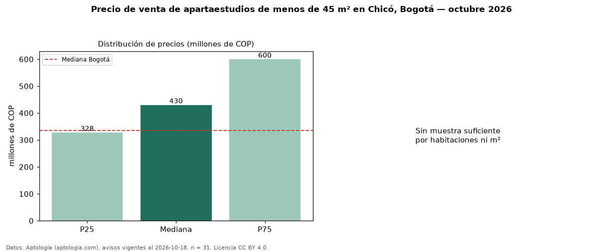

Precio de venta de apartaestudios de menos de 45 m² en Chicó, Bogotá — octubre 2026
COP 430 millones es el precio mediano de apartaestudios de menos de 45 m² en venta en Chicó, Bogotá (n = 31 avisos). Frente a la mediana de todos los apartaestudios en venta de Chicó (COP 511 millones, n = 47), queda 16 % por debajo; este segmento reúne el 66 % de esos avisos. El área mediana anunciada es 26 m². La administración mediana declarada es COP 345.000 al mes (n = 18). La mitad central de los avisos va de COP 328 millones a COP 600 millones (razón 1,8), una dispersión moderada. El estrato más frecuente es 6 (84 % de los avisos con estrato). La mediana de todos los apartaestudios en venta de Bogotá es COP 335 millones (+28 % de diferencia). 32 % de los avisos con el dato declara parqueadero. Datos: Aptología (aptologia.com), CC BY 4.0 — https://www.aptologia.com/apartaestudios-en-venta/bogota/chico. Archivos: PDF, CSV con las cifras y gráfica PNG.

| Avisos únicos | 31 |
|---|---|
| Percentil 25 | COP 327.500.000 |
| Mediana | COP 430.000.000 |
| Percentil 75 | COP 600.000.000 |
Fuente: avisos vigentes de portales inmobiliarios recopilados por Aptología, deduplicados (mínimo 30 avisos únicos por celda). Precios pedidos, no cerrados. Fecha: 2026-10-18.